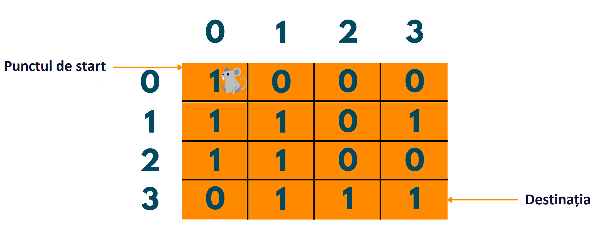
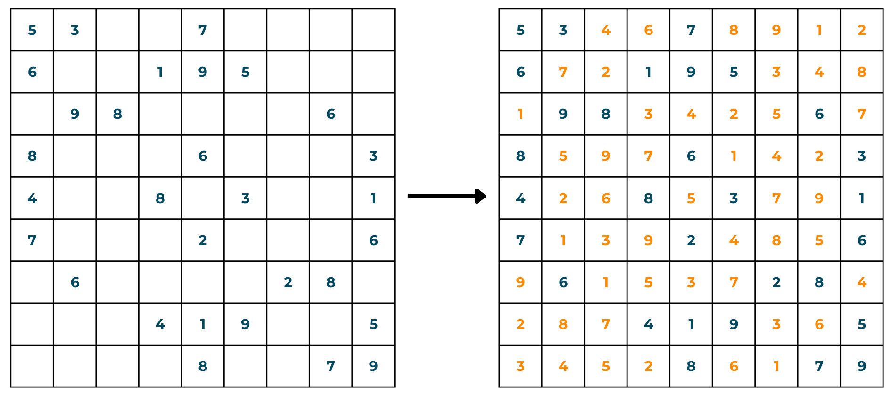
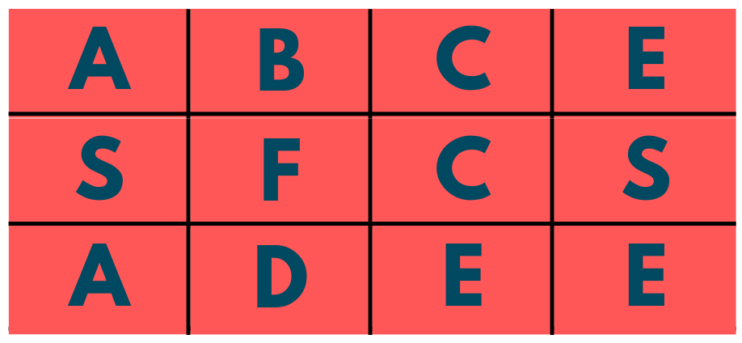
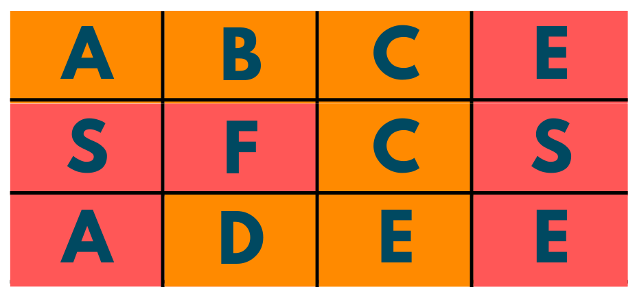

Exemple
I. Problema șobolanului în labirint
Condiția problemei: Vi se oferă o matrice de ordinul N*N având 1 și 0 scrise ca elemente. Acum, imaginați-vă că există un șobolan la (0,0) și trebuie să ajungă la destinație la (N-1, N-1). Trebuie să oferiți căile pentru ca șobolanul să ajungă la destinație. Acum, 1 înseamnă că poți trece prin element, dar 0 înseamnă că nu poți. De asemenea, trebuie să aveți grijă de faptul că puteți merge în sus (S), în jos (J), în stânga (S) sau în dreapta (D). Tipăriți căile posibile.
Abordarea problemei: în timp ce lucrați la soluția la această întrebare, asigurați-vă că desenați o schiță aproximativă a matricei și introduceți elementele în funcție de intrare. Va deveni mult mai ușor cu asta. Acum, în această întrebare, trebuie să găsiți toate căile posibile, astfel, vom folosi abordarea backtracking. Pașii sunt următorii:
- Începeți cu poziția șobolanului (0,0). Acum, observați dacă puteți vira la dreapta sau aveți un 1 sub poziția șobolanului. Dacă, la ambele poziții, aveți 1, atunci alegeți una dintre modalități.
- Acum, începeți să vă mișcați verificând unde se află 1 față de poziția dvs. actuală.
- Nu uitați să adăugați calea răspunsului dvs. Pentru a vă deplasa în sus, imprimați S , pentru jos, imprimați J, pentru stânga, S și pentru dreapta, D.
- Dacă la un moment dat vă aflați într-o fundătură, întoarceți-vă la poziția anterioară și urmați din nou o nouă cale.
- Dacă ajungeți la destinație, imprimați-l ca răspuns și căutați alte răspunsuri potențiale repetând pașii.

Algoritm C++
II. Solver Sudoku
Condiția: vi se oferă o grilă Sudoku cu câteva celule goale. Trebuie să scrieți un cod astfel încât toate celulele să fie umplute într-un mod corespunzător, conform regulilor Sudoku, care sunt:
Fiecare dintre cifre 1-9 trebuie să apară exact o dată pe fiecare rând.
Fiecare dintre cifre 1-9 trebuie să apară exact o dată în fiecare coloană.
Fiecare dintre cifre 1-9 trebuie să apară exact o dată în fiecare dintre cele 9 sub-casete 3x3 ale grilei.
NOTĂ: „.” reprezintă spațiul gol.
Abordarea problemei: Dacă ați rezolvat un Sudoku în viața reală, v-ar fi foarte ușor să înțelegeți problema. Scopul acestei probleme este de a avea toate numerele de la 1 la 9 în fiecare bloc, rând și coloană. Deci, cum începem? Sa vedem:
- Începem cu primul rând și prima coloană.
- Începeți prin a verifica numerele de la 1 la 9.
- Dacă există un număr care lipsește din blocul, coloana sau rândul respectiv, punem acel număr în acea poziție.
- Repetați pașii de mai sus din nou și din nou până când completați întreaga casetă.
- De asemenea, observați că dacă faceți o greșeală în timp ce ocupați, trebuie să vă întoarceți pe urmă și să ocupați din nou postul verificând postul vacant.

Algoritm C++
III. Găsirea Cuvântului
Condiția: vi se oferă o grilă de ordine m*n având ca elemente diferite alfabete. Ți se dă și un cuvânt. Trebuie să verificați dacă cuvântul dat există sau nu în matricea de cuvinte.
Abordarea problemei: Majoritatea problemelor de programare sunt legate de viața de zi cu zi. Ar trebui să rezolvați această întrebare ca și cum ați rezolva fizic jocul de căutare a cuvintelor. Acum urmează aceeași mentalitate și pași:
- Observați ce cuvânt și elemente vi s-au dat.
- Acum, începeți prin a afla elementele din indicele 0.
- În orice moment, dacă nu puteți localiza un anumit element în grilă, returnați false.
- Dacă, până la sfârșit, găsiți toate literele cuvântului țintă, atunci returnați adevărat.


Algoritm C++
{kind=link}
{kind=link}
{kind=link}